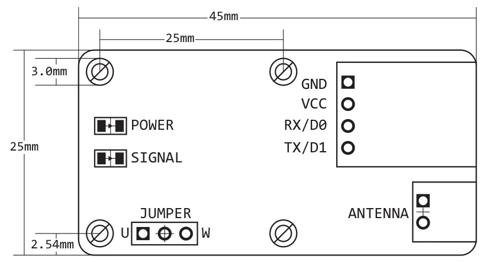
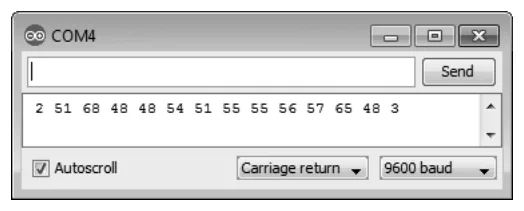

In this section you’ll connect the RFID reader to the Arduino and then test that it’s working with a simple sketch that reads RFID cards and sends the data to the Serial Monitor.
The Schematic
Figure 16-3 shows the RFID module connections.

Testing the Schematic
Once the RFID reader is connected to the Arduino, you can test it by placing the black jumper across the left and center pins of the jumper section. Then, to make the connections between the RFID reader and the Arduino, follow these steps, using female-to-male jumper wires:
- Connect the included coil plug to the antenna socket.
- Connect the reader GND to the Arduino GND.
- Connect VCC to Arduino 5V.
- Connect RX to Arduino pin D0.
- Connect TX to Arduino pin D1.
The Test Sketch
Enter and upload Listing 16-1.
// Listing 16-1
int data1 = 0;
void setup()
{
Serial.begin(9600);
}
void loop()
{
if (Serial.available() > 0) {
data1 = Serial.read();
// display incoming number
Serial.print(" ");
Serial.print(data1, DEC);
}
}Check Serial Monitor
Open the Serial Monitor window and wave an RFID tag over the coil. The results should look similar to Figure 16-4.

Notice that 14 numbers are displayed in the Serial Monitor window. This is the RFID tag’s unique ID number, which we’ll use in future sketches to identify the tag being read. Now record the numbers that result from each of your tags, because you’ll need them for the next few projects.